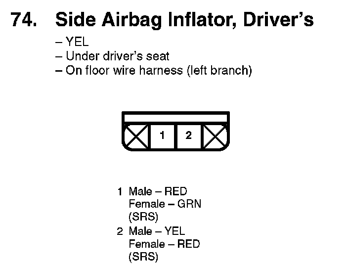
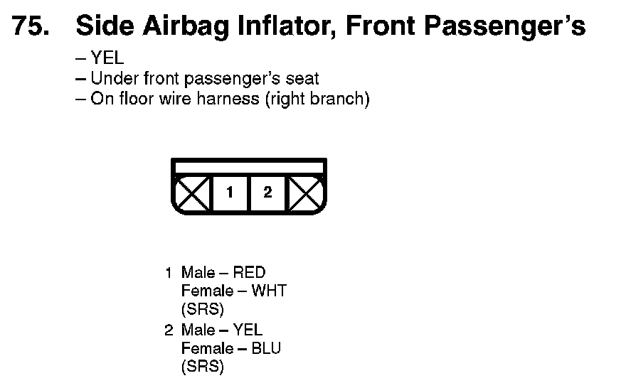
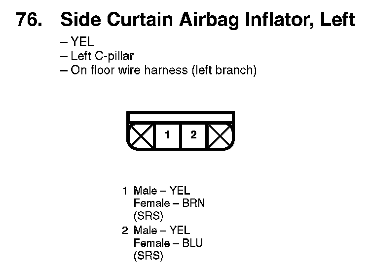
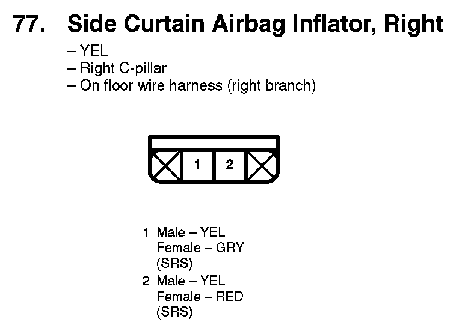
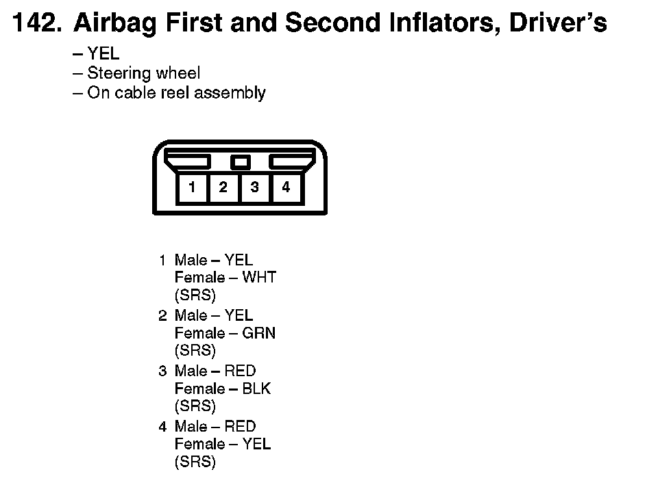
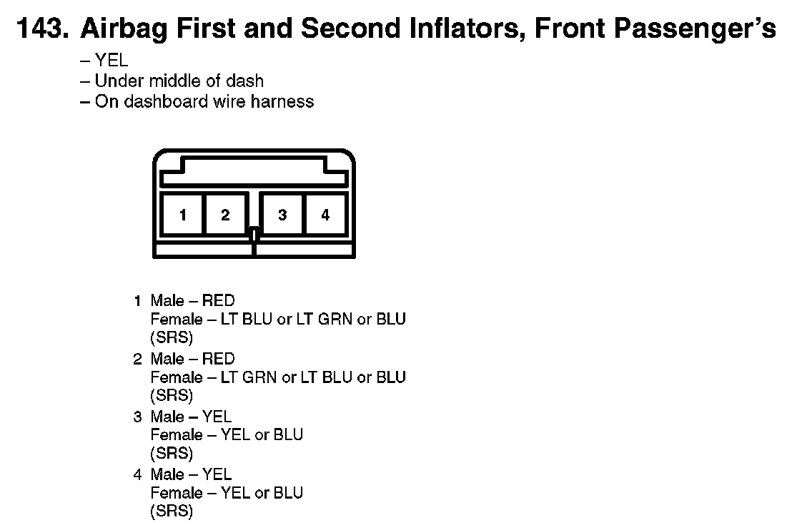

View 51-75: 74
74. Side Airbag Inflator, Driver's:

75. Side Airbag Inflator, Front Passenger's:

76. Side Curtain Airbag Inflator, Left:

77. Side Curtain Airbag Inflator, Right:

142. Airbag First And Second Inflators, Driver's:

143. First And Second Inflators, Front Passenger's:
